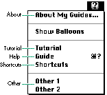
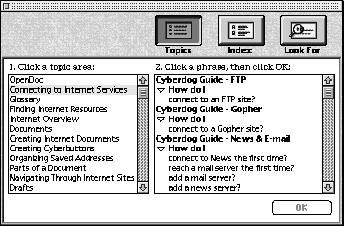
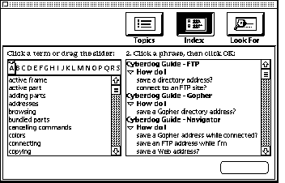
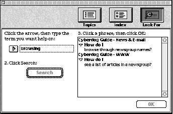

You've helped create an Apple Guide guide for your standalone
application. Now your company is writing an OpenDoc part editor,
but it's not obvious how Apple Guide can be used in the context of
parts and compound documents. The answer is Apple Guide 2.1,
which extends the original version to allow easy use of Apple
Guide features, including Help menu management, coachmarks, and
context checks, in the world of OpenDoc. This article introduces
the new features of Apple Guide 2.1 and explains in detail how to
use them with OpenDoc.
The world of OpenDoc isn't like the world of the standalone "behemoth" application --
a fact that hasn't escaped the notice of developers who want to provide online help. An
application developer can easily provide complete online help since the application is a
single self-contained unit that will run in its own window. On the other hand, the
developer of an OpenDoc part editor never knows what other part editors will be
running along with it during an OpenDoc session. Users can have any number of part
editors running in any number of windows at the same time. All the editors might
belong to a package written by one company, or, more likely, it might be a
conglomeration written by a number of different companies. Under these
circumstances, providing help gets a little more complicated.
Since Apple Guide is such a powerful help system, wouldn't it be nice if it could be
applied to the new world of OpenDoc? Enter Apple Guide 2.1 (released right on the
heels of Cyberdog, Apple's new integrated suite of OpenDoc part editors for the
Internet). The raison d'être of Apple Guide 2.1 is to support Apple Guide for
OpenDoc, with particular emphasis on Cyberdog. This version includes a number of
new features, some of which are specific to OpenDoc and some of which aren't. Among
these new features are the following:
In this article, I'll describe how Apple Guide behavior has changed in the world of
OpenDoc, and I'll also tell you about some new features of Apple Guide 2.1 that you can
use in conventional applications. I'll go over the simple steps you must take to add a
guide to an OpenDoc part editor, and then I'll cover some of the things you could do,
depending on the kinds of help you want to provide for your part editor. You'll find
samples of the resources mentioned in the article on this issue's CD.
If you haven't worked with Apple Guide before, you might want to read "Giving Users
Help With Apple Guide" in develop Issue 18 before tackling the new concepts presented
here. Apple Guide Complete is the definitive reference, though the current (1995)
edition doesn't cover Apple Guide 2.1.
From the beginning, one of the strengths of Apple Guide has been that it enables guide
authors to create guides without requiring modification of the application being guided.
While most other new Toolbox managers were saying, "To support me, just add a
NewManagerIdle call in your main event loop," Apple Guide said simply, "I work just
fine without any modifications to your application at all!" One of the key elements
enabling Apple Guide to work without requiring changes to any code is Apple Guide's
automatic population of the Help menu.
The Help menu has also been called the Guide menu at certain times in its
history, but both names refer to the same menu (the one labeled with a
question mark).
The algorithm Apple Guide uses to determine how to populate the Help menu, although
simple on the surface, has a number of subtleties. With each new release, the
algorithm has been extended somewhat. To understand how the Help menu is populated
in Apple Guide 2.1, let's look at how the population algorithm has developed over time.
You Apple Guide experts might even discover some little-known features.
Table 1 presents a summary of how the different versions of Apple Guide populate the
Help menu; details follow.
How populating the Help menu has evolved
Original Apple Guide
Apple Guide 2.0
Apple Guide 2.1
Note: All candidates are determined when the Help menu is built. Exclusions are
applied at the time the menu is built, except for the 'prts' resource test, which is
applied when Apple Guide is launched.
"ORIGINAL" APPLE GUIDE
The general process of populating the Help menu hasn't changed since Apple Guide was
first introduced. At application launch time, Apple Guide does the following:
For the original version of Apple Guide (any version before Apple Guide 2.0), the list
of candidates is created by searching for all guide files that are in the same folder as
the application being launched and that aren't Mixin guide files (see Apple Guide
Complete, page 2-14, for details about Mixin guide files). A guide file with an alias in
the application's folder would also be added to the list of candidates.
Apple Guide then sees if any candidates should be excluded by subjecting them to these
tests:
Apple Guide then tries to place the name of each remaining candidate in the position it
requested with the helpType parameter of the <Help Menu> command (see Apple Guide
Complete, page 10-14). Placement of the names of different types of guide files is
shown in Figure 1. If two or more final candidate guide files have the same type and
that type isn't Other, Apple Guide includes the name of the first guide file of that type
(by alphabetical order) and excludes the others. The names of all guide files of type
Other appear in the Help menu.

Figure 1. Placement of Help menu items by type in original Apple Guide
APPLE GUIDE 2.0
Apple Guide 2.0 (an update to System 7.5 but backward-compatible with System 7 and
7.1) added some logic to the Help menu population algorithm that hasn't been widely
documented. The crux was adding a new place to look for candidate guide files, called the
Global Guide Files folder. The Global Guide Files folder resides in the Extensions folder
and, as its name suggests, is a place where you can put guide files to make them
available to all applications.
When Apple Guide 2.0 is creating its list of candidate guide files for an application, it
looks both in the folder containing the application and in the Global Guide Files folder.
When looking to exclude candidates, Apple Guide 2.0 works almost exactly like the
original Apple Guide -- it excludes any guide files from its candidate list that don't
pass the <App Creator>, <Gestalt>, and 'QLfy' tests.
The only difference is in how Apple Guide 2.0 selects an item for the Help menu if
there are multiple candidates. In the original Apple Guide, if two guide files passed all
the tests and were of the same type (aside from type Other), the one sorting first
alphabetically would be chosen for inclusion. In Apple Guide 2.0, if there are two or
more guide files of the same type, the first one alphabetically is still chosen for
inclusion, but any guide file in the application's folder is chosen over any guide file in
the Global Guide Files folder. So, for example, if there are Tutorial guide files in the
application's folder and also in the Global Guide Files folder, those in the Global Guide
Files folder will be ignored, and the one that's first alphabetically in the application's
folder will be chosen for inclusion. Names of guide files of type Other are added from
both the application folder and the Global Guide Files folder.
APPLE GUIDE 2.1
Apple Guide 2.1 adds two new mechanisms to the process of building the Help menu:
We'll look at these new mechanisms in more detail in the next section.
In addition, Apple Guide 2.1 supports document-specific help. Recall that when
creating a list of candidate guide files, Apple Guide 2.0 looks in the same folder as the
application and in the Global Guide Files folder. Apple Guide 2.1 behaves exactly the
same way for conventional applications, but for OpenDoc documents launched via the
OpenDoc shell application, Apple Guide 2.1 treats the document's folder as the
"application's folder," so it looks in the same folder as the document for guide files,
rather than in the same folder as the OpenDoc shell application (besides searching the
Global Guide Files folder). As a result, the names of guide files in the same folder as
the OpenDoc shell application never appear in the Help menu; the names of guide files
in the same folder as an OpenDoc document can appear in the Help menu for that
document.
Apple Guide 2.1 introduces a new concept: the multiprocess guide file. A multiprocess
guide file is specified by including in the guide file an 'mlti' resource for conventional
applications or a 'prts' resource for OpenDoc part editors. Because these two are so
similar, I'll discuss them together. I'll also tell you more about the new 'apsg'
resource, which when added to a guide file means that the guide file's name will appear
in the Help menus of multiple applications.
USING MULTIPROCESS GUIDE FILES
Before multiprocess guide files, the name of every guide file that met Apple Guide's
criteria for inclusion in the Help menu appeared as its own menu item. Multiprocess
guide files are different. All multiprocess guide files that are candidate guide files and
that aren't excluded for any reason (other than that there's more than one of them) get
grouped together with the Help guide file (if there is one). This group is accessed
through a single Help menu item labeled "Process Name Guide," where Process Name is
the document name for OpenDoc and the application name for conventional applications.
This item is placed in the menu position that the name of the Help guide file would
otherwise occupy. Figure 2 shows a Help menu with a multiprocess guide item for a
Cyberdog document called Peter's Notebook.
Figure 2. A Help menu with a multiprocess guide item
When users choose the multiprocess guide menu item from the Help menu in a
conventional application, they get a combined Full Access window, known as a Merged
Access window, with these features:

Figure 3. Merged Access window with topic areas

Figure 4. Merged Access window with index terms

Figure 5. Merged Access window with "Look For" search
If a guide file has an 'mlti' or a 'prts' resource, Apple Guide 2.1 ignores the guide file
type specified by the <Help Menu> command. However, for backward compatibility,
you probably should declare your multiprocess guides as type Other using the <Help
Menu> command so that Apple Guide versions before 2.1 will list them individually in
the Help menu.As I mentioned before, if there are both multiprocess guide files and a
Help guide file, the Help guide gets treated as if it were another multiprocess guide and
gets merged with them. If there's only a Help guide file and no multiprocess guide files
for an application, the name of the Help guide file appears in its appointed slot in the
Help menu, just as in previous versions of Apple Guide. Note that if there are any
multiprocess guides, the Help guide, if supplied, must be a Full Access window guide to
be listed in the Merged Access window with the multiprocess guide files.
Multiprocess guide files aren't mixins, as explained in "Mixin vs. Multiprocess Guide
Files." For one thing, multiprocess guide files are treated independently by Apple
Guide and thus won't have resource conflicts with other multiprocess guide files
(unlike mixins). Furthermore, all multiprocess guides must have topic areas and
index terms (that is, they must be Full Access window guides); if they don't, as you
might expect, they won't be accessible in the Merged Access window.
______________________________
MIXIN VS. MULTIPROCESS GUIDE FILES
You might be asking, "What about mixins? Aren't they kinda like multiprocess guide
files? When would I use mixins instead?"
Mixin guide files are used to add, delete, or replace content in existing guide files.
Multiprocess guide files can't do this. Mixins work best for small, incremental
changes, but they require good resource management. They also require a main guide
file to modify.
Multiprocess guide files in OpenDoc never know which other guide files, if any, will be
there when OpenDoc is loaded, so you can't use a mixin in place of a multiprocess guide
file -- there may not be a main guide file to modify. Also, you don't know which other
mixins might be there, so resource conflicts could easily occur.
But you can use a mixin to modify your own multiprocess guide if you do the following:
______________________________
The 'prts' resource introduced in Apple Guide 2.1 is expressly for OpenDoc. If the
current process is an OpenDoc process (any process that supports OpenDoc part
embedding), guide files with a 'prts' resource (like those with an 'mlti' resource) are
grouped together in a Merged Access window when the user chooses the Document Name
Guide item from the Help menu.
But before Apple Guide adds multiprocess guide files for an OpenDoc process, it
performs one more exclusion check -- and unlike all the other exclusion criteria, this
one is applied each time Apple Guide is launched and not when the Help menu is built.
Apple Guide compares the list of part editor names in the 'prts' resource with the list
of part editors currently in the active process and adds the guide file only if it finds a
match. Thus, even though the Global Guide Files folder will likely contain multiprocess
guide files for every OpenDoc part editor on the user's machine, the user will see help
only for editors currently in the active process -- sort of a "dynamic" Merged Access
window. If the 'prts' resource is empty -- that is, if it lists no part editor names --
the guide will always be added to the Merged Access window if the current process is an
OpenDoc process.
USING ONE GUIDE FOR SEVERAL APPLICATIONS
Recall that if you specify a creator code in a guide with the <App Creator> command,
the guide file will be removed from the candidate list unless the application's creator
code matches. But what if you have a guide for a suite of applications and you want it to
appear in the Help menu for each of those applications?
Until now, the only way to do this was to have all the applications in the same folder as
the guide file or to have a copy of the guide file (or an alias to it) in each application's
folder. With Apple Guide 2.1, you can get the desired result much more cleanly and
easily by adding to your guide file an 'apsg' resource listing the application signatures
that your guide supports. Then, with your guide file in the Global Guide Files folder,
the Help menu will be appropriately populated for every listed application.
If you specify an 'apsg' resource and use an <App Creator> command, Apple Guide 2.1
uses only the resource. If there's no resource, the <App Creator> specification is used,
if it exists. If you specify neither and you put your guide file in the Global Guide Files
folder, it will appear in the Help menu for every application (which might not be what
you want and could greatly annoy your users).
That brings us to the present in the evolution of Apple Guide. Now we'll look at the
details of getting your guide file to work with OpenDoc. You'll see how to make help for
an OpenDoc part editor accessible to users, and how to add coachmarks, context checks,
and events once your guide is up and running.
Now that you know the history of Apple Guide and the Help menu, you've probably got a
pretty good idea of how to get your part editor's guide to appear where you want it.
Let's outline the preferred method to accomplish this:
Unless for some reason you want your guide to appear as a multiprocess guide in
conventional applications, you don't need and shouldn't add an 'mlti' resource.
Guide Maker doesn't support the new resources yet, so they must be created by hand
where required. For the 'prts' resource needed by OpenDoc, I recommend creating a
file named MyGuideOpenDocResource that you can then reference from your Guide
Script source file with the line
<Resource> "MyGuideOpenDocResource", ALL
A file on this issue's CD includes samples of these resources and ResEdit templates. For
the details, in Rez format, see "New Apple Guide Resources."
______________________________
NEW APPLE GUIDE RESOURCES
Apple Guide 2.1 introduces the 'mlti', 'prts', and 'apsg' resources to support its new
features. These resources must be created by hand. The 'mlti' resource, by its mere
existence, means the file is a multiprocess guide file. This resource is four bytes of
zeros.
type 'mlti' {
longint = 0;
};
The 'prts' resource is just like an 'STR#' resource -- a short specifying the number
of part editor names, followed by the names.
type 'prts' as 'STR#';
The 'apsg' resource is a long specifying the number of application signatures, followed
by those signatures.
type 'apsg' {
longint = $$Countof(SigArray);
array SigArray {
literal longint;
};
};
Here are some examples of using these Rez templates:
// Multiprocess guide file -- conventional app
resource 'mlti' (1000) {};
// Multiprocess guide for OpenDoc to be merged
// when 'Test Clock' is in the active process
resource 'prts' (1000) {{
"Test Clock"
}};
// Guide only these two applications
resource 'apsg' (1000) {{
'ttxt', 'MSWD'
}};
______________________________
You can provide access to your guide in ways other than Apple Guide's automatic
population of the Help menu if you don't mind a little code modification -- all of the
Apple Guide API calls still work just fine in OpenDoc, so you can add a Guide button or a
Help menu item to your part editor and then call AGOpen when the user clicks or
chooses that item. (See "Giving Users Help With Apple Guide" in develop Issue 18 for a
detailed description of the Apple Guide API.)
Don't modify the Help menu from within your part editor with the Toolbox
calls HMGetHelpMenuHandle and AppendMenu (although it's perfectly
acceptable to do this from within an application -- even an application that
supports OpenDoc embedding). The system, OpenDoc, and Apple Guide don't
support this kind of use and many problems will occur.*
If all you need is a simple "book" guide for your part editor, with no coachmarks,
context checks, or Apple events, you don't need to do anything else -- carrying out the
three steps listed above is enough to make Apple Guide help for your part editor
accessible within OpenDoc. If you want to provide more elaborate help, read on.
Once your guide is up and running and the user has selected a topic, Apple Guide 2.1
looks and acts just like previous versions of Apple Guide. The guide window appears on
top of the application, and users can click through the guide's panels as they work in
the application. But when the guide tries to communicate with the outside world, some
things become more complicated. Specifically, you may have to take additional steps
when you try to do any of the following:
The good news is that sending events to other applications such as Apple Guide or the
Finder, or getting system context information (such as how many monitors the
computer has) or anything else not specified above, works just the same, so I won't
talk about those things. Before reviewing the specific changes required to use
coachmarks, perform context checks on part editors, and send your part editor Apple
events, I need to discuss the biggest difference in approach required to use Apple Guide
with OpenDoc: I call it the "target application" problem.
Apple Guide was written to be very System 7 friendly, so almost everything Apple
Guide does relies on Apple events. Most of the Apple Guide API calls (such as
AGInstallContextHandler) secretly use Apple events to get their work done.
Unfortunately, when Apple events were designed, OpenDoc wasn't around. Apple events
rely on targeting specific processes (usually identified by application signature).
Apple Guide assumes that every application has a unique static signature and that only
one instance of the application will be running at a time. (If you launch a second
document for an application, the second document is opened in the same process as the
first one.) Neither of these assumptions holds for OpenDoc.
The process signature for an OpenDoc process is the application signature for the root
application. For documents launched with the OpenDoc shell, that signature is 'odtm'.
For documents opened into other applications that support embedded parts (as
ClarisWorks will soon), the signature is that of the host application. So if, for
example, you target a coachmark at the 'odtm' process and your current OpenDoc
session is running in ClarisWorks, the coachmark won't fire.
And there can be more than one process with the same signature running. If you
already have an OpenDoc document open and go to the Finder to launch a second
document, it launches as a separate process. So if both documents are launched using
the OpenDoc shell, there will be two processes with the 'odtm' signature running
concurrently. Then, for example, if you target a context check at the 'odtm' process,
you have no idea which of the two processes will handle the request.
Even if you somehow could manage to target the correct OpenDoc process, a single
OpenDoc process can have a number of part editors running inside it -- possibly
multiple instances of the same part editor. How do you target a specific editor inside a
particular process?
Don't abandon hope -- all is not lost! But do keep this issue in mind as I describe the
steps you need to take to use some of the cooler Apple Guide features.
There are two things you need to do to use coachmarks in OpenDoc: always use the Guide
Script constant FRONT (I'll give examples in a moment), and then use context checks
to ensure that your panel is displayed only when the user is in the right process (that
is, you need to ensure that the process you want to coachmark is the front process).
For the most part, you'll find that coachmarks, except object coaches (because of the
target limitation), work just fine in OpenDoc.
MENU COACHES
Menu coaches are used to highlight a particular menu and menu item. You can refer to a
menu name and item by number or name.
Menu coaches work fine in OpenDoc. The only recommendation I have (whether or not
you're in OpenDoc) is always to specify menu titles and items by name and not by
number. This is especially important in OpenDoc, because individual OpenDoc part
editors can add menus and menu items at will (check out Cyberdog for a great example
of this). For example, to coach the Drafts item in the Document menu, use something
like this:
<Define Menu Coach> "DocumentDrafts", FRONT, REDUNDERLINE, "Document", "Drafts...", RED, UNDERLINE
WINDOW COACHES
Window coaches mark static items in windows. They work in OpenDoc as in
applications. For example, you could coach the user to close the window called Log with
the following:
<Define Window Coach> "CloseBox", FRONT, REDCIRCLE,
"Log", CLOSEBOX
But to have a window coach highlight a particular element of a part in a window is
usually impractical in OpenDoc, because the location of a part in a window isn't
predetermined. A part could be all by itself in its own window or anywhere inside a
container window. An exception to this is when a part is viewed only in a situation
where the offset from the window edges is known. A good example of this is the
Cyberdog Web browser part, shown in Figure 6. The URL (Uniform Resource Locator)
field is always in the same place because the Web browser is always in its own
window, so in this case you could coach the URL field with the following window coach:
<Define Window Coach> "WebURLField", FRONT, REDARROW(1,4), FRONT, Rect(0,0,125,100)
Figure 6. The Cyberdog Web browser window
ITEM COACHES
Item coaches are used in Apple Guide to coachmark items specified by dialog ID or
balloon ID.
Dialog IDs work if your OpenDoc part editor brings up a standard dialog with standard
dialog items. Or you can use dialog IDs to coachmark items in the OpenDoc shell dialogs.
For example, to coach the Save Draft button in the Drafts dialog, you could use the
following item coach:
<Define Item Coach> "SaveDraftButton", FRONT, REDCIRCLE,
DialogID(1)
You'll find that because standard Balloon Help doesn't work in OpenDoc except under
special circumstances, balloon IDs are probably too tricky to use. The reason for this
problem is conflicting assumptions in OpenDoc and Apple Guide about the accessibility
of resources. Apple Guide expects all the balloon resource information to be available
in the current resource chain. Logically, one would store balloon resources for a part
editor in its resource fork, but, due to the intricacies of OpenDoc, a part editor's
resource fork isn't available when Apple Guide needs it. Since Apple Guide can't get at
the Balloon Help resources, it can't look up a balloon ID's rectangle, and thus you can't
easily u4e balloon IDs to coachmark items in OpenDoc.
Object coaches rely on guide code inside a process to return the coaching rectangle. The
name of the desired object to be coached is passed to the specified target application,
which responds with the coaching rectangle.
Unfortunately, Apple Guide allows only one object coach handler per process. If two
part editors in one OpenDoc process both try to install object coach handlers, the
second one will override the first one (that is, any object coaches will be handled by
the second editor and never by the first). This means you can't use object coaches
reliably with OpenDoc processes.
If you decide to use object coaches in your part editor because you know that
yours will be the only one installing an object coach handler, be sure to use
the OpenDoc API to do the installation.
This obstacle to using object coaches in OpenDoc has been noted as a serious concern by
many people, including Apple Guide authors and those on the Apple Guide and OpenDoc
teams. Some possible solutions have been proposed. We can hope that updated versions
of Apple Guide and OpenDoc will support one of them in the near future (although
nothing has been promised yet).
APPLESCRIPT COACHES
AppleScript coaches don't require a target application at all, so they don't suffer
directly from the target application problem. To determine the target rectangle,
though, the script itself usually has to communicate with one or more OpenDoc part
editors. You can make part editors scriptable, but remember to use OpenDoc's
scripting API, not the regular AppleScript calls.
There are three sources of context checks for guides written for OpenDoc:
THE STANDARD SUITE OF CONTEXT CHECKS
The standard suite of context checks includes ways of testing basic elements of the
traditional Macintosh interface. Here are some examples of these context checks:
The context check definitions and the resources you must include in your guide to use
them are on any Apple Guide authoring CD (such as the CD that comes with Apple Guide
Complete, the Custom Solutions CD, or the Mac OS SDK CD).
These context checks work pretty well in OpenDoc processes. All of the system
information context checks work (bit depth, printer info, file sharing info, and so
on), because they all target the Finder for their information. The application
information context checks work (again, you'll have to target these with FRONT),
except for menu item checks, since OpenDoc controls how the menus are stored and
displayed. At present, if you're using the standard context checks in an OpenDoc
process, you can't determine whether a menu item is enabled, is checked, or exists at
all (though you can write a custom context check to do this).
The process context checks do work, but they aren't very helpful because they're based
on target application signatures. For example, asking if the current active process is
'odtm' will tell you if the active process is the regular OpenDoc shell but won't help
you determine whether it's some other OpenDoc process (because the user could have
some other OpenDoc shell application). Nor will this confirm that the active process is
the desired process (since there could be several OpenDoc processes running).
THE STANDARD OPENDOC CONTEXT CHECKS
To provide guide authors with tools to answer questions about OpenDoc processes, a
suite of OpenDoc context checks has been written. For these context checks to work, the
user must have an OpenDoc shell plug-in called AppleGuidePlugIn correctly installed.
This plug-in is installed automatically when Apple Guide 2.1 is installed. If the
plug-in isn't installed, all OpenDoc standard context checks will always return FALSE.
Before we look at the available OpenDoc standard context checks, you should note that
for every one of these context checks that takes the name of a part editor as one of its
parameters, there are two variations: if the second SHORT parameter is 0, the editor
names must match exactly; if the second SHORT parameter is 1, the actual editor name
need only contain the text specified in the context check. Both variations exist for all
context checks that take a part editor name. All of these functions return a Boolean
result (TRUE or FALSE).
Is the Apple Guide plug-in available?
<Define Context Check> "IsPlugInAvailable", 'odag', FRONT, SHORT:1
This context check is a way to make sure that the plug-in has been installed correctly
and is available to run when the next OpenDoc process runs, thus ensuring that any
standard OpenDoc context check will return a correct result. The only catch is that the
plug-in isn't actually installed until the first OpenDoc process has been launched, so
this check will return FALSE if no OpenDoc process has yet been run, even if the
plug-in is available. With this limitation in mind, you can define this context check,
which ties an Apple Guide context check name to one of the resources you included
above. Then you might use it this way:
<Define Sequence> "How do I do something?" <If> IsPlugInAvailable() # instruction panels <Else> # panel saying that this guide requires Apple Guide 2.1 <End If> <End Sequence>
You probably won't need to use this context check and will just assume that the Apple
Guide plug-in was installed correctly.
Is OpenDoc active and frontmost?
<DCC> "IsOpenDocActiveAndFrontmost", 'odag', FRONT, SHORT:2
Use this context check to see whether the active process is an OpenDoc process. It isn't
application signature based and thus will return TRUE for any OpenDoc process, no
matter what the host application is.
Is the part editor named "MyPart 1.0" installed?
<DCC> "PartEditorInstalled", 'odag', FRONT, SHORT:4,
SHORT:O, LPSTRING
<DCC> "PartEditorInstContains", 'odag', FRONT, SHORT:4,
SHORT:1, LPSTRING
To determine whether a particular part editor is installed in the OpenDoc Editors
folder and is available, use this context check. It has nothing to do with whether an
instance of the part editor is currently in the active process. You might use a call like
PartEditorInstalled("MyPart 1.0") to make sure that a particular part editor has been
installed on the machine before you tell users to do something that depends on the part
editor's being available. This is one of the functions that takes a part editor name as its
argument; you could use the less specific version of the function by calling
PartEditorInstContains("MyPart"), but take care -- you might end up matching
someone else's part editor if you're too general!
Is the part editor named "MyPart 1.0" in the active process?
<DCC> "PartInActiveProcess", 'odag', FRONT, SHORT:6,
SHORT:O, LPSTRING
This is a way to check whether an instance of the specified part editor is in the active
(frontmost) process. The corresponding part may or may not be in the active
(frontmost) window.
Is a "MyPart 1.0" part in the active window or in a nonactive window?
<DCC> "PartInActiveWindow", 'odag', FRONT, SHORT:7,
SHORT:O, LPSTRING
<DCC> "PartInNonActiveWindow", 'odag', FRONT, SHORT:8,
SHORT:O, LPSTRING
These two context checks enable you to see whether there's an instance of the part
either in or not in the active (frontmost) window.
Is a "MyPart 1.0" part in the active document or in a nonactive
document?
<DCC> "PartInActiveDoc", 'odag', FRONT, SHORT:14,
SHORT:O, LPSTRING
<DCC> "PartInNonActiveDoc", 'odag', FRONT, SHORT:15,
SHORT:O, LPSTRING
An OpenDoc process can contain multiple documents. A particular document in a
process might have more than one window. These two context checks enable you to see
if an instance of the specified part is in any of the active document's windows or any
windows of a nonactive document. It's unlikely you'll need these checks -- most of the
time you'll want to check whether a part is in the active window or the active process.
Is a "MyPart 1.0" part the active part (the active frame)?
<DCC> "PartIsActiveFrame", 'odag', FRONT, SHORT:10, SHORT:O, LPSTRING
This is a way to check whether an instance of the specified part is the currently active
part. This is useful to know because a part editor's menus are usually available only
when the part is active.
Is the active part the root part?
<DCC> "ActivePartIsRoot", 'odag', FRONT, SHORT:9
If you need to determine whether the active part is the root part for the active
document, use this check.
Does the active part allow embedding?
<DCC> "ActivePartAllowsEmbedding", 'odag', FRONT, SHORT:5
With this check you can determine whether the active part is a container part and
allows other parts to be embedded inside it. You might use this if, as part of a task, you
need to get the user to drag a new instance of a part into the active container part.
Is the active document bundled?
<DCC> "ActiveDocumentIsBundled", 'odag', FRONT, SHORT:3
This is a way to check whether the active document is bundled. Bundling a document
prevents any subparts in the document from being activated; clicking on a subpart in a
bundled document will select the subpart but won't activate it. In essence, this makes
all subparts in the document read-only.
Is the active document dirty?
<DCC> "ActiveDocumentIsDirty", 'odag', FRONT, SHORT:11
This is a way to check whether the active document is dirty (needs to be saved). If this
context check returns TRUE, the Save menu item is enabled. You might use this to tell
the user to save changes if necessary.
CUSTOM CONTEXT CHECKS
If you still need more specific part information that isn't available through the
standard suite of context checks or the OpenDoc standard context checks, just as with
standard applications you'll need to write custom context checks.
To define and use a custom context check, you must work around two difficulties. The
first is the target application issue we're now so familiar with. As before, it's easy to
work around: when writing the <Define Context Check> command for your custom
context check, you'll need to use the FRONT constant for the target application. The
second problem concerns the fact that you could have multiple instances of a part
editor running at the same time, in either the same or a different OpenDoc process.
This is a problem for both the guide author and the custom context check writer.
The primary concern is for the guide author: if there are multiple instances of the
same part editor in one or more currently running OpenDoc processes, it's impossible
for your guide to identify which part editor you're providing help for. Let's look at an
example. Before step 1 of your task, you use the standard OpenDoc context checks to
make sure an instance of your part is active. You then tell the user to do step 1. Step 2
requires step 1 to have been completed, so you want to do a custom context check to see
if step 1 has been done. However, if there are two instances of your part around, which
instance the custom context check queries is unknown. Users may have successfully
completed step 1, but the context check may come back saying they haven't. In this
case, they'll be stuck at this point and won't be able to continue.
The context check writer has similar concerns. The way a part editor would install and
remove a context check handler would probably be to call AGInstallContextHandler in
its constructor and AGRemoveContextHandler in its destructor. If it's done this way,
anytime a new instance of the part is created it overrides (and removes) the previous
context handler, so the last instance of the part to be created is the one that will supply
context information, no matter which process it's in. In addition, when a part editor
calls AGRemoveContextHandler, it will remove whichever handler is currently
installed; if one of two instances of the part is destroyed, the context handler will be
removed, leaving no context handler for the remaining instance.
Unfortunately, there's no simple answer to these concerns at this time. There are
partial solutions for particular cases, though. For example, if you know that your part
editor will definitely have exactly one instance, you might just take your chances. If
you always want to have the context check respond about the currently active instance
of the part (if the active frame is the desired part), you can write an 'extm' context
check that you install in your guide that asks OpenDoc for the currently active frame,
and if the part behind that frame is your part, do some context checking on it. As more
people try to tackle custom context checking, better solutions will evolve, perhaps
using the ODExtension mechanism of OpenDoc.
Sometimes you also want to send Apple events or launch AppleScript scripts from your
guide when a user clicks a particular button or goes to a particular panel. As I've said
before, this is still possible in OpenDoc part editor guides. The only thing that's more
challenging is when you want to send an event to your part editor. OpenDoc supports
Apple event handling for part editors by overriding a number of the standard Apple
event Toolbox routines and by providing a way to target a particular part editor.
Explaining how to do this is beyond the scope of this article; for more information,
read the OpenDoc Programmer's Guide, especially Chapter 9, "Semantic Events and
Scripting."
As you can see, Apple Guide 2.1 provides a number of new features, both for standard
guides and guides written for OpenDoc part editors. And despite a few limitations,
writing guides for part editors is as easy as writing them for standalone applications.
So try it out! Users and reviewers seem to agree: Apple Guide -- and thus any
application or part editor that has guides -- is in a class by itself.
RELATED READING
PETER COMMONS(commons@guideworks.com) is the vice president of engineering
at guideWorks, LLC. He lives happily with his wife, Claire, their dog, Chet, and their
cats, "fat cat" Clyde and "brat cat" Oliver, in Sunnyvale, California, and wonders if
he'll ever finish writing updates to Spaceward Ho!
Thanks to our technical reviewers Sharon Everson, Troy Gaul, Devon Hubbard,
James Miyake, John Powers, and Melissa Sleeter.